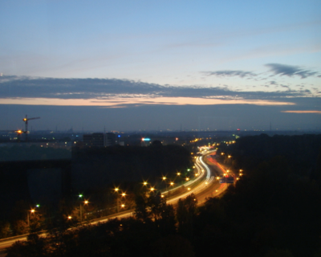

Getting ready for Xmas - already...

Yet again...
Hey guys and girls - finally I’m back at the blog after (yet again) a long period of silence. It’s been a pretty crazy spring, summer and autumn and I haven’t really felt I had the time to blabla about my whereabouts. Despite my lack of words, I actually manage to keep my gallery sort-of up to date, so if you are curious and since ‘pictures tell thousands of words’ (you see blabla again!) you can just keep an eye on that, add work and sleep and you will know what I’m up to.
But since it has been a while I thought I wanted to keep you in the loop now that I have some time left after all the boring house-keeping duties. Where to start... well I have been traveling quite a bit both for work and pleasure (read: pleasure*2) the last 6 months. Some of the highlights are shopping in NYC, Roger Waters Live in London, Ibiza partying, family chillin’ at Mallorca and pain in Frankfurt. There should be pictures for all events, but to add some words to ‘em...
I had a meeting in New Haven in May which is always a great opportunity to stop by NYC. I love the vibe and since this was my second time there it was much more relaxed this time and I spent the days shopping and chilling. I found an awesome hostel - cheap, great location and with super breakfast included - so I had the perfect base to just enjoy the city and the vibe. One evening I met up with a couple of colleagues one of which was with his brother who was living in Jersey. He gave us a tour to a handful of awesome bars which made a great night and really made the stay all worth it.
I flew back to Frankfurt where I met with MG and took the next flight to London. As mentioned we had tickets for Roger Waters (Pink Floyd’s) The Wall live at the O2 Arena, which was a got dam awesome concert/performance. If he ever gives another such performance I’ll be there.
A couple of weeks after returning from UK I went to Ibiza with the IMPRS folks. I had booked tickets for the Defected opening party at the Pacha Nightclub. People were sceptic but in the end they really liked it. It was the CRAZIEST evening ever!! So if you ever go to Ibiza and like a god damn wild party you should do it to yourself and buy tickets for Pacha! The only bad thing I can say about the night: I have never payed that much for 0.2 liters of water ;)
Having kick-started the summer in Ibiza I went back to the Iberic islands in late July with Mette, her sister and her Parents. Holger found a great hotel in a small cozy city and it was a really great place to pull the plug and just enjoy good company and good food. Unfortunately I could not enjoy the spanish wine to the tapas since I already started preparing for the 42195 meters to be overcome in Frankfurt at this point.
Having signed up for the Marathon I prepared myself via a 14 week program including removing alcohol from my ‘diet’. I used the same program this time since I felt it worked pretty well in Copenhagen. This time the biggest challenge was, besides not being able to enjoy a glass of wine with all the great food I had while traveling, actually getting the time to run while traveling. In the end I succeeded and had the pleasure to run in Germany*2, Denmark, Spain*2, England as well as the Netherlands. Last sunday the training then had to stand the final test - The BMW marathon in Frankfurt. I went there saturday morning where I met Mette at the Hbf. After having used the morning/midday for a good breakfast, a bit of sightseeing and picking up my starting number, we went to the hotel. The picture above shows the view from our room - pretty neat! I’ve put some more pics here. Sunday morning at 10:00 was the point of no return and 3 hours 29 minutes and 5 seconds later I crossed the finish line in the Festhalle to cheers, lights and music - pretty cool way to finish! The goal was to beat my old time (check) and to run the 42195 meters in less than 3.5 hours (check - barely ;) so when Mette and I took the train back to HD sunday afternoon I was on top... and I still am! This morning I went for the first run after the marathon. I must admit that the 42km from sunday are still in the legs but taking everything into account I’m pretty fresh :D So now I’m considering if I will have time to go below 3:20:00 in the spring. However, I’m afraid the thesis will demand too much time by then... let’s see.
I think that was it for now. If I won’t manage to blabla more before Xmas, then a happy one to all of you!
Cheers!
Saturday, 5 November 2011
